ARM-Gicv2 第三章学习
多核处理不同中断
- SGI：N-N 模型。
- 外设中断：1-N 模型。
识别支持的中断
GICD_ISENABLERn
访问 GICD_ISENABLERn，来了解 GIC 目前支持那些中断，GICD_ISENABLER0[15:0] 对应 SGI 0-15，GICD_ISENABLER0[31:16] 对应 PPI 16-31。以此类推 GICD_ISENABLE1[31:0] 对应 SPI 32 - 63。
对于一个中断，如果不被支持，则对应的寄存器位读为0且写无效；如果支持且永久启用，对应的寄存器读为1且写无效，其余的读写规则：
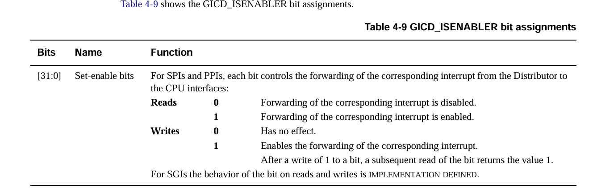
操作方法
- 访问 GICD_TYPER.ITLinesNumber 揭示有多少数量的 GICD_ISENABLER。
- 写 GICD_CTLR 来禁用分发器分发中断
- 对于每个 GICD_ISENABLER 的位对应的中断，利用不支持则写无效原则，写 0xffffffff 给寄存器，再次读寄存器，读出 1 则可知道支持的中断号。
识别永久启用的中断
GICD_ICENABLERn
访问 GICD_ICENABLERn，来了解 GIC 目前关闭哪些中断，其是 GICD_ISENABLER 的反寄存器。
写规则如下：
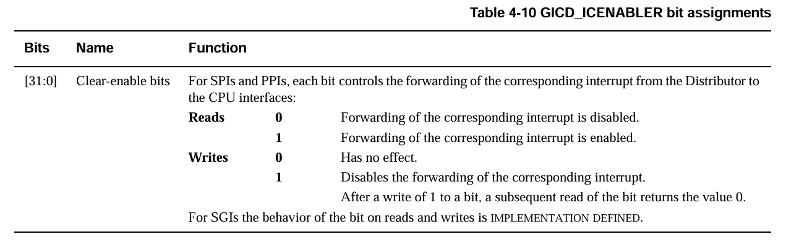
GICD_IGROUPRn
访问 GICD_IGROUPRn，来了解 GIC 中断分组情况，结构和前面类似，每一位确定一个中断号的分组。
控制某一分组是否进行路由是在 GICD_CTLR.EnableGrp0，GICD_CTLR.EnableGrp1 位进行的。
操作方法
- 访问 GICD_TYPER.ITLinesNumber 揭示有多少数量的 GICD_ICENABLER（和GICD_ISENABLER数量一致）。
- 对于每个 GICD_ICENABLER 的位对应的中断，写 0xffffffff 给寄存器，再次读寄存器，读出 1 则可知道永久启用的中断。
- 给 GICD_ISENABLER 写 1 来恢复必要的中断。
GICD_ISENABLER 写 0 无效，即不能通过 ISENABLER 禁用某一中断号。
GICD_ICENABLER 写 0 无效，即不能通过 ICENABLER 启用某一中断号。
中断处理流程
- 一个中断发起后，GIC 确认该中断是否启用，不启用的中断将被无效。
- 对于每个启用的且正在等待被处理的中断，分发器决定目标CPU。
- 对于每个CPU，分发器确定最高优先级的等待中断，然后将此中断路由给目标CPU接口。
- 如果一个分发器将中断分配到CPU接口，该CPU接口将确认该中断优先级是否足够有效以至于向CPU提出中断请求。
- 当 CPU 处理此中断请求，其访问 GICC_IAR 来确认此中断，这次访问将返回中断号，而且如果是 SGI 中断，也会返回源 CPUID。
- 当 GIC 识别到 5 中的访问时，GIC 会更改中断的状态以如下规则：
- 如果中断的等待状态不可变或者中断再次产生，更改为等待并活跃状态。
- 否则，更改为活跃状态。
一个等待状态不可变的例子是对于电平触发的中断，CPU 的确认行为并不会使电平回归低位，只有 CPU 处理程序处理中断后才会回归低位。
- 当 CPU 处理完中断后，其必须向 GIC 表明中断处理完成，通过：
- 总是向 EOIR 寄存器写
- 可能会向 GICC_DIR 写
对于 CPU 接口来说，GIC 要求向 EOIR 写的顺序是向 GICC_IAR 读的反顺序，确保每次的 EOIR 对应最近的中断确认。
其次，CPU接口永远不会对处于等待并活跃的中断向 CPU 发出中断请求。
对于 PPI 和 SGI 中断，每个中断号的状态是 banking 的，这意味着如果一个中断在某一CPU接口是活跃或者等待并活跃的，只有该CPU接口不会再次向CPU提出相同的中断请求。
对于 SPI 中断，每个中断号的状态是统一的，这意味着如果一个中断号是活跃或者等待并活跃的，那么所有 CPU 接口都不会提出相同的中断请求。
优先级降低和中断关闭
优先级降低
优先级降低发生在一个对 EOIR 寄存器的有效写上，此时优先级从此次写 EOIR 对应的中断优先级降低到还没有写 EOIR 寄存器的最高优先级活跃中断，如果没有这样的中断，降低到 Idle 优先级。
中断关闭
中断关闭是中断状态的改变：
- 从等待并活跃转换到等待。
- 从活跃转换到空闲。
如前面讲述的那样，如果中断优先级降低和中断关闭这两个阶段因为 GICC_CTLR.EOImode 设为 1 而分离，那么中断处理程序必须：
- 进行一个有效的 EOIR 写，产生中断优先级降低在 CPU 接口上
- 进行 GICC_DIR 写，来正式关闭中断。
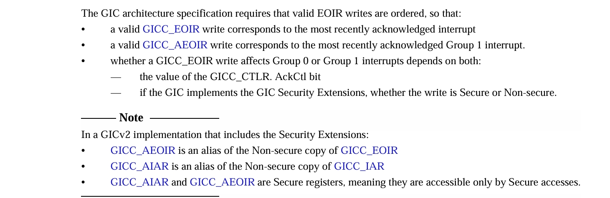
GIC 中断控制
设置并清理中断的等待状态
- 对于外设中断，处理器可以：
- 设置等待状态通过写 GICD_ISPENDRn 的某一位。
- 清理等待状态通过写 GICD_ICPENDRn 的某一位。
- 对于电平敏感的中断：
- 通过写 GICD_ICPENDRn 来清除等待状态无效。
- 如果通过写 GICD_ISPENDRn 来设置等待状态，则电平变化不会影响等待状态。
- 对于 SGI 中断：
在一个CPU接口上同一中断号只能有一个活跃。
中断处理状态机
GIC 为每个中断维护一个状态机。
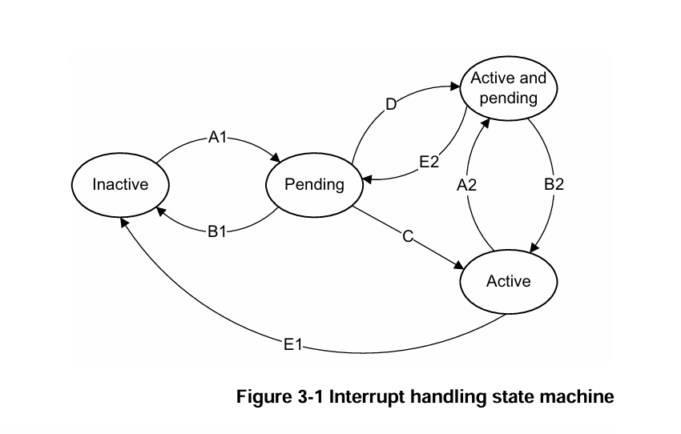
- A1,A2:增加等待状态
- 对于SGI，发生如下状况之一：
- 软件写 GICD_SGIR 来指定某一处理器作为目标
- 目标寄存器写 GICD_SPENDSGIRn 来指定源寄存器和中断号。
- 对于SPI和PPI，发生如下状况之一：
- 一个外设产生一个中断信号。
- 软件写了 GICD_ISPENDRn。
- B1,B2:删除等待状态
- 对于SGI，仅仅在目标寄存器写 GICD_CPENDSGIRn 时发生。
- 对于SPI和PPI，发生如下状况之一：
- 电平触发的中断信号置位为无效。
- 边沿触发的中断信号或者通过写 GICD_ISPENDRn 产生的等待状态被软件写 GICD_ICPENDRn 清楚。
- C:等待到活跃状态
- CPU 读取 GICC_IAR
- D:等待到等待并活跃状态
- 对于SGI，发生如下情况之一：
- 读 GICC_IAR 和设置 SGI 中断同时发生。
- 当同中断号、同源CPU、同目标CPU的两个中断有一个转变为活跃时，另一个转变为等待并活跃。
- 对于SPI和PPI，按顺序发生如下情况：
- 中断是启用的。
- CPU 读 GICC_IAR，向该中断添加活跃状态。
- 如果是电平触发的中断，则中断一般情况就会变成等待并活跃状态。
- 如果是边沿触发的中断，则取决于是否再次触发中断。
- E1,E2:移除活跃状态。
发生在CPU通过写GICC_EOIR或者GICC_DIR清除中断时。
中断优先级
数量
GICv2 最多支持 256 种优先级，但具体支持多少是实现定义的，如果少于256则低位是读恒为0且写无效的。
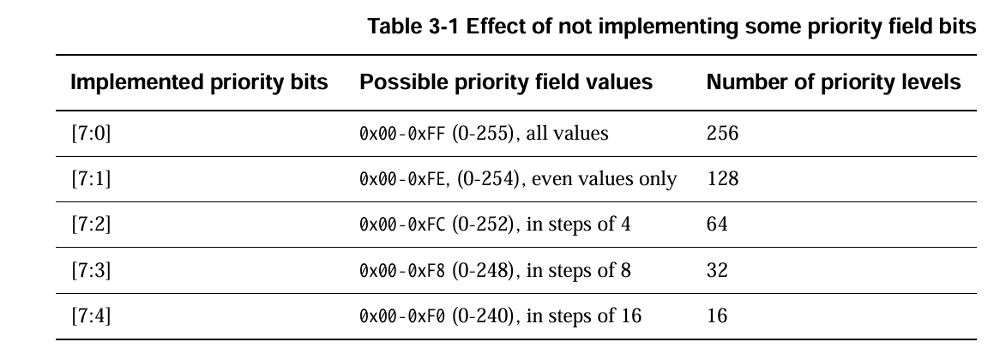
想知道具体的中断优先级数量可以通过向 GICD_IPRIORITYR 寄存器写 0xff 后读取来确定（根据写无效），该寄存器也配置了每个中断的优先级（8位对应一个）
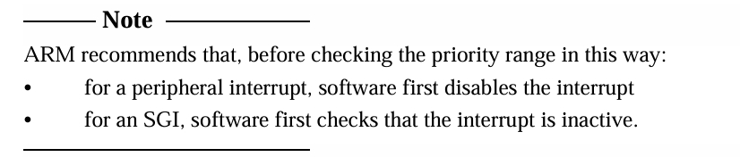
抢占
一个处于等待的中断可以被发起需要满足以下条件：
- 其优先级大于CPU接口的优先级掩码。
- 其所在组的组优先级大于CPU接口的运行优先级。
优先级掩码
设置 GICC_PMR 可以定义目标处理器的优先级门槛，只有大于此优先级的中断才可能被发起中断请求。
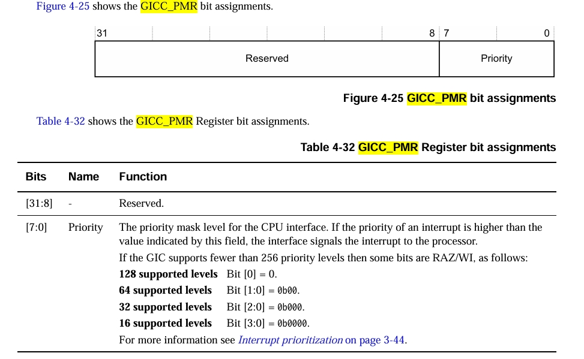
优先级分组
优先级分组使用 GICC_BPR 来将一个优先级值分为两个区域——组优先级和子优先级，如下图所示，向该寄存器写入的值即为 Binary point value。
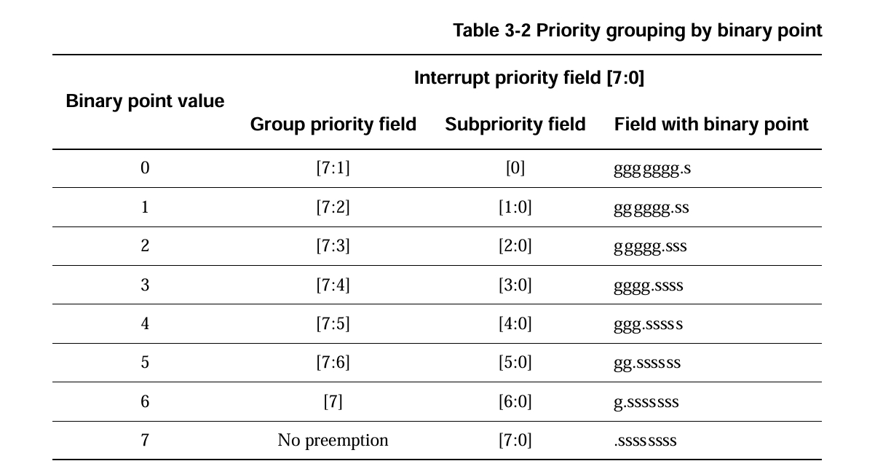
当决定是否需要抢占时，同一组内的中断视为同一优先级。
中断分组对中断处理的影响
GIC 中断分组支持
GIC 为组 0 和组 1 提供了别名寄存器如下：
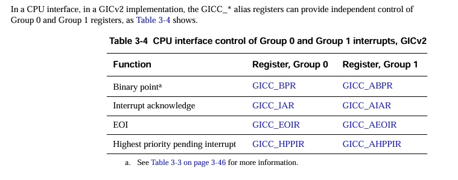
特殊中断号
如果 GIC 支持中断分组。
1020-1021：保留。
1022: 发生在以下条件满足时：
- 读 GICC_IAR 进行中断确认
- 此时最高优先级的等待中断在组 1
- GICC_CTLR.AckCtl 设置为 0
- 该中断足够有效可以发起中断请求
这向程序表明此时有组1中断应该去处理，且应该读 GICC_AIAR，如果是对于实现了安全扩展的GIC，这表明应该以非安全的形式读 GICC_IAR。中断分组对中断处理的影响
ARM强烈推荐对于支持中断分组的GIC，应该设置GICC_CTLR.AckCtl为0，在这种情况下： - 组0中断应该通过读 GICC_IAR 来确认，或者在安全扩展的情况下通过安全读 GICC_IAR 实现。
- 组1中断应该通过读 GICC_AIAR 来确认，或者在安全扩展的情况下通过非安全读 GICC_IAR 实现。
建议组0的中断优先级都比组1高。中断确认在安全扩展
安全扩展启用的情况下，组0中断是安全中断，组1中断是非安全中断，同样是在GICC_CTLR.AckCtl为0情况下：
确认非安全中断，处理器可以非安全读GICC_IAR 或者安全读 GICC_AIAR 寄存器。
确认安全中断，处理器可以安全读 GICC_IAR 寄存器。
此时安全读到 1022 代表当前最高优先级等待中断为非安全中断，非安全读到 1023 代表当前最高级中断是安全中断。
启动或者初始化配置
GIC 会将所有的中断归到组0，并且关闭 FIQ 异常请求。
软件视角对于 GIC 安全扩展的优先级
安全与非安全优先级
很多系统在实现时需要 Group 0 的所有中断优先级高于 Group 1。因此 ARM 强烈推荐在分配优先级时遵循以下原则：
- 组 0 中断优先级分配 GIC 所支持优先级的低半部分，即最高位为 0.
- 组 1 中断优先级分配 GIC 所支持优先级的高半部分。即最高位为 1.
安全访问
安全访问/写入 GICD_IPRIORITYR 寄存器，访问/写入结果和寄存器所存值相同。
![SecureView.jpg]非安全访问
非安全访问 GICD_IPRIORITYR 寄存器，访问结果是寄存器所存值左移 1 位的结果。非安全写 GICD_IPRIORITYR 寄存器，写的结果是所写值右移一位，以及 bit[7] = 1。寄存器值
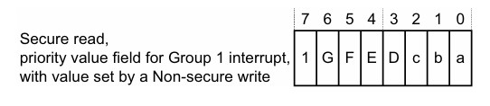访问结果
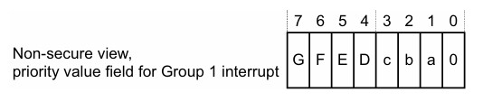软件视角
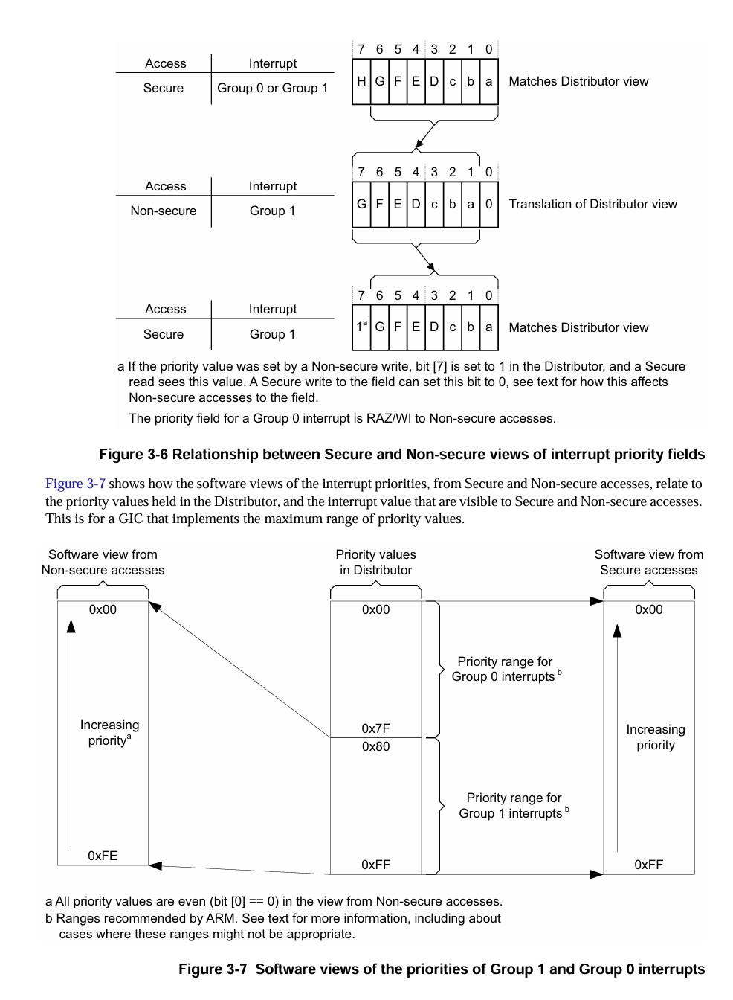组 1 中断的抢占控制
如前文所述，一般情况下 GICC_BPR 决定组 0 抢占，GICC_ABPR 决定组 1 抢占，但这取决于 GICC_CTLR.CBPR 的控制，如果 CBPR = 1，则 GICC_BPR 同时决定组 0 和组 1 的抢占。安全扩展
- CBPR 字段仅仅在 GICC_CTLR 的安全拷贝下实现。
- GICC_BPR 安全拷贝决定组 0 中断，在 CBPR = 1 的情况下，也决定组 1 中断。
- GICC_ABPR 是 GICC_CTLR 的非安全拷贝。
- GICC_ABPR 是安全寄存器，仅能安全访问。
中断分组对优先分组的影响
当某一中断使用 GICC_ABPR 时，GICC_ABPR 决定的小数点相比 GICC_BPR 将会右移一位，这样保证了软件可以在不清楚自己处于安全/非安全的状态下得到相同的优先级分组。
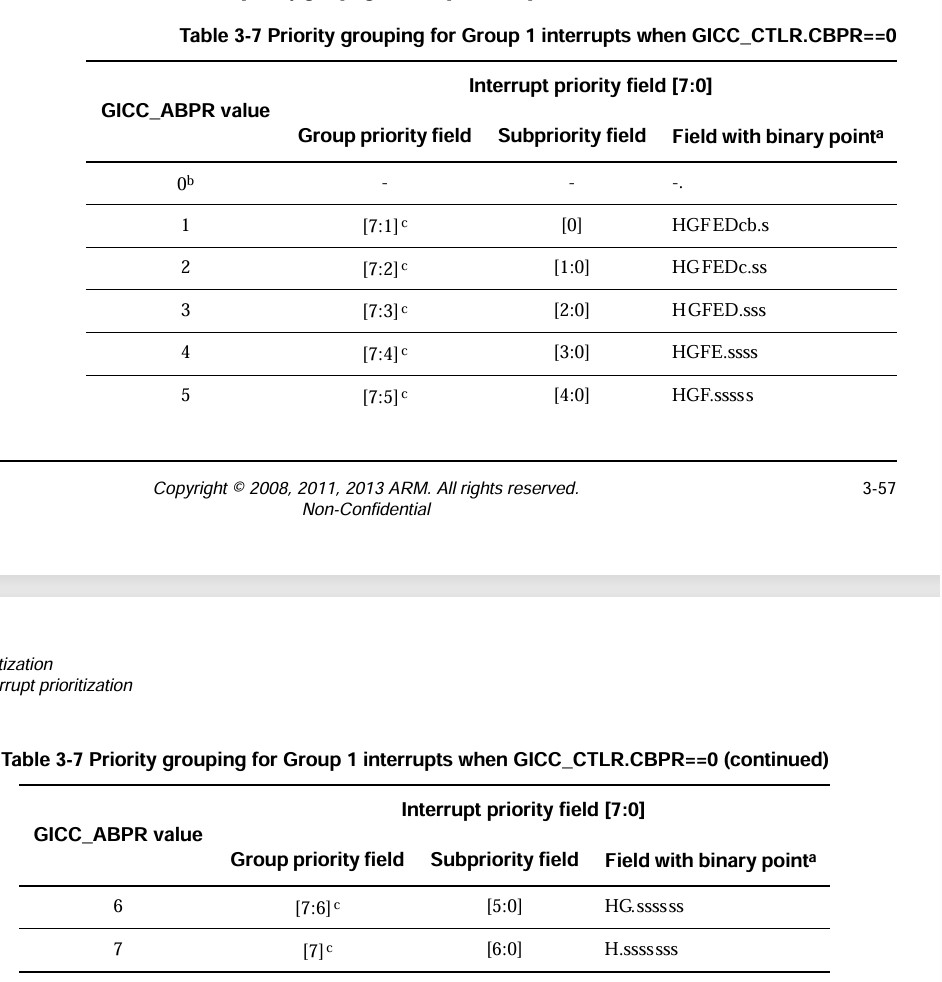
至于怎么理解的话，我是想假如以软件视图来看，假设一个中断的优先级是 abcdefg，如果是安全视角，存入 GICD_IPRIORITYR 的就是 abcdefg，然后假如 GICC_BPR 是 1，则分组是 abcde.fg，
如果是非安全视角，存入 GICD_IPRIORITYR 的就是 1abcdef，然后加入 GICC_ABPR 是 1， 则分组是 1abcde.f，这样两者之间就是一个数量差的映射关系，分组优先级就不变了。
在虚拟化环境中支持 IRQ 和 FIQ
Hypervisor 的工作
- 实现一个虚拟的分发器，使用 GIC 的虚拟化扩展,这个虚拟化分发器可以虚拟化来自 GIC 的 IRQ 中断为虚拟 IRQ 和 虚拟 FIQ 中断，并且将其路由到合适的虚拟机。
- 路由物理 IRQ 到 Hypervisor，让其可以被虚拟分发器处理。
原理
Guest OS 分配中断到组 0 和 组 1，来将他们分配为 FIQ 或者 IRQ，其对 GIC 分发器的访问被 Hypervisor 捕获，变为对虚拟分发器的访问。
虚拟CPU接口将这些中断以虚拟 FIQ 和 IRQ 的形式发送给 CPU。这个虚拟化过程在 Hypervisor 的控制下进行，对 OS 不可见。
细节
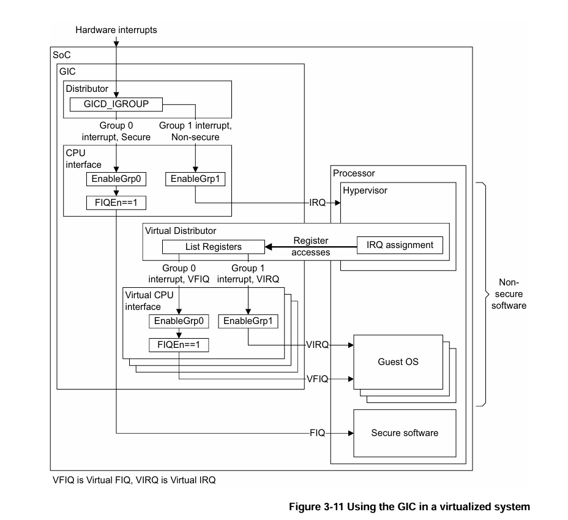
当 GIC 发送一个 IRQ 给处理器时，中断应该被路由到 Hypervisor，Hypervisor 决定这个中断是发给自己还是 Guest OS的，如果是后者，则其应该确定：
- 哪个 OS 该处理这个中断
- OS 将这个中断配置为了 FIQ 还是 IRQ
- 中断优先级，基于 OS 配置的。
确定后，Hypervisor 更新寄存器列表，将这个中断加入等待中断中。
如果收到一个 IRQ 时，当前运行的 OS不能处理这个中断,Hypervisor 应该：
- 唤醒可以处理该中断的 OS。
- 将这个中断加入可以处理该中断的上下文保存中。